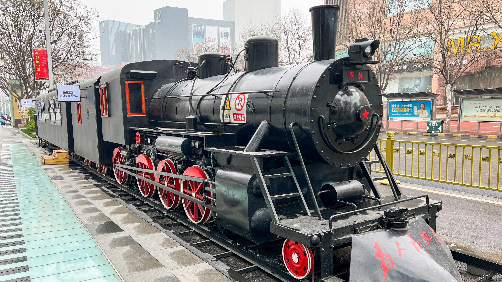

| El tren es un vehículo compuesto por una serie de vagones o coches acoplados entre sí y remolcados por una locomotora, o bien por coches autopropulsados que generalmente circulan sobre carriles permanentes. Los trenes son usados para el transporte de mercancías, animales o personas de un lugar a otro. Los trenes tienen su origen en los vagones que eran impulsados por caballos o tirados por cables. Tras la invención de la locomotora a vapor en el Reino Unido, los trenes se expandieron rápidamente, lo que permitió que las mercancías y los pasajeros se desplazaran de forma más rápida y económica ayudando a la industrialización y la interconexión. Producto de la expansión de los trenes surgieron proyectos como el Primer ferrocarril transcontinental de Estados Unidos, el Ferrocarril Transiberiano, el Orient Express o el Ferrocarril de Panamá entre mediados del siglo xix y principios del siglo xx. Sin embargo, a partir de la década de 1920, producto de la invención del automóvil, el uso de los trenes fue decayendo, decadencia que fue acelerada luego de la Segunda Guerra Mundial. Actualmente, el uso de trenes es contemplado debido a su mayor eficiencia de combustible y menores emisiones de gases de efecto invernadero en comparación con otros modos de transporte terrestre, además, se han desarrollado trenes experimentales como los trenes de levitación magnética. |  |
|
|